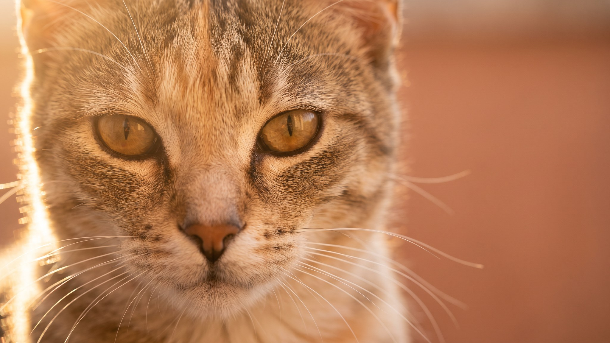

Переноска достаётся из шкафа, кошка прячется, а на улице мокрый снег быстро остужает пластик. Подготовка с вечера снимает две задачи: животное заранее знакомится с местом, а вы проверяете сухость и крепления. Соберите комплект по шагам, чтобы дорога туда и обратно прошла в одном порядке.
🐾 Чтобы уход не держать в голове
AnimaLife напомнит, когда стричь когти, вычёсывать, купать и обрабатывать от паразитов, и заведёт дневник по вашему питомцу. Бесплатно.
Настроить напоминания → Настроить в MAX →
У вас iPhone? AnimaLife есть в App Store
Проверьте дверцу, замки, ручки и вентиляционные отверстия. Внутри кошке должно хватать места, чтобы лечь и свободно повернуться. На дно положите влагопоглощающую пелёнку, сверху плотную флисовую вкладку. Она сохраняет тепло и остаётся сухой сверху, если нижний слой намокнет.
Чек-лист комплекта:
Не закрывайте пледом вентиляцию и не кладите нагретые предметы рядом с кошкой. Тепло должно сохраняться подстилкой и стенками, пока воздух свободно поступает внутрь.
Оставьте открытую переноску в комнате на несколько дней до поездки. Положите внутрь знакомую подстилку, иногда кладите рядом лакомство или игрушку. Кошка заходит по желанию и выходит в любой момент. Когда она начнёт сидеть внутри спокойно, закройте дверцу на 5 секунд и сразу откройте.
Повторяйте 2 раза в день, постепенно добавляя время и короткий подъём переноски с пола. Спокойный вход важнее длинного ожидания взаперти. Если поездка назначена на завтра, ограничьтесь свободным обследованием и одним коротким закрытием дверцы без переноса по лестнице.
Перед выходом закройте окна и двери комнаты, посадите кошку в переноску и проверьте оба замка. До машины несите её за две точки или используйте ремень по инструкции производителя. Плед прикрывает бока от ветра, передняя вентиляция остаётся открытой. Сократите ожидание на улице и заранее прогрейте машину до комфортной для людей температуры.
Соберите кошку до того, как начнёте одеваться сами. Шорох куртки и поиск ключей меньше отвлекают вас от проверки переноски. Телефон, ключи и запасная вкладка должны лежать в одной сумке у выхода.
В автомобиле поставьте переноску на заднее сиденье и зафиксируйте предусмотренным конструкцией способом. Не открывайте дверцу во время движения. В общественном транспорте держите переноску на коленях или у ног, вдали от прохода и источников горячего воздуха. Обычно кошка некоторое время осматривается, затем садится или ложится; дыхание остаётся ровным, она реагирует на знакомый голос.
На длительном маршруте заранее выберите закрытое место для остановки. Дверцу открывают только внутри неподвижной машины при закрытых окнах. Воду предлагают в небольшой непроливающейся миске, затем её убирают.
После возвращения. Дома сначала закройте входную дверь, затем откройте переноску в знакомой комнате. Дайте кошке выйти самой, проверьте и замените влажную вкладку. Верните воду, лоток и лежанку на привычные места. После дороги питомец может некоторое время отдыхать отдельно, но должен постепенно включаться в обычные дела.
Оставьте чистую переноску открытой до следующего дня. Кошка сможет обнюхать её после поездки, а вы ещё раз проверите замки и высушите съёмные вкладки перед хранением.
Обратитесь к ветеринару, если необычная вялость, учащённое дыхание, дрожь или отказ от привычного поведения сохраняются после возвращения в тепло. Не ждите восстановления сил дольше, если состояние кошки ухудшается в дороге.
Материал носит информационный характер и не заменяет очную консультацию ветеринара.
🐾 Заведите дневник ухода за кошкой
Вес, шерсть, обработки, прививки — всё в одном месте. А если что-то смущает, AI-ветеринар ответит круглосуточно и бесплатно.
Завести дневник → Завести в MAX →
У вас iPhone? AnimaLife есть в App Store
🐾 Понравился разбор?
Подпишитесь на канал — каждый день разбираем по одному тревожному симптому у кошек и собак: что в пределах нормы, а когда пора к врачу. Подпишитесь, чтобы не пропустить разбор, который может спасти здоровье вашего питомца.